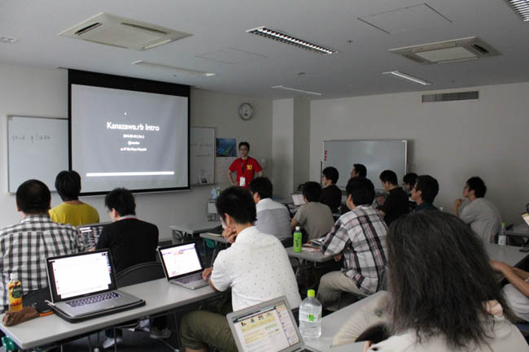
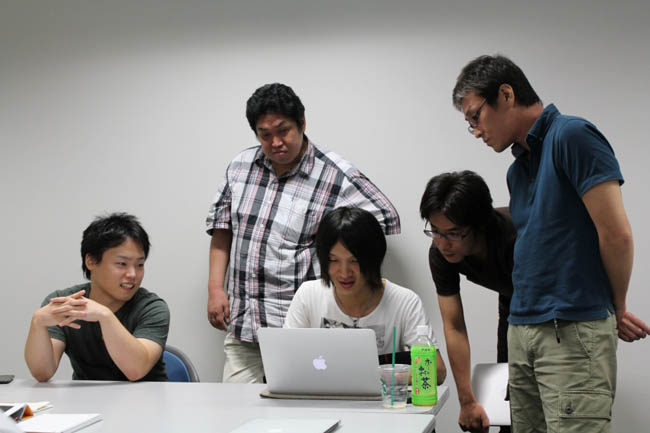
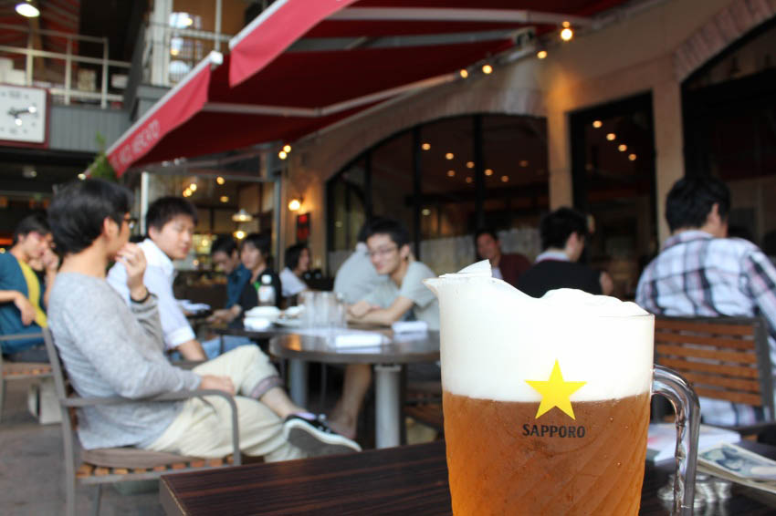

This project is maintained by kanazawarb
Edit test by kiyohara 2013/09/23 22:52
kanazawa.rb では定期的に meetup を開催しています。
の 予定 です。
さて。
ネット上には様々な情報が溢れています。Ruby に関する情報は世界中の人々が発信しており、一日中 PC を開いてネットに向かっていたとしても追いつくことができないほどです。
ビデオチャットの環境も整っています。あえて物理的に同じ場所に集わなくたって顔を合わせることもできるようになってきました。
でも、それで満足ですか？
人が、そこに居る。
この事実は思った以上に大きいです。存在そのものが持つ情報量はネット上に表すことができません。それを体感する方法は、今のところ同じ空間に居る以外にありません。
だから会うんです。
カモンジョイナス！ YOU来ちゃいなよ！
当日は初めて会う人もたくさんいると思います。
そこでポジションペーパーの作成をオススメします。ポジションペーパーを用意しておくとで自己紹介がスムーズになりますし、「こういうことやってる人がいるのか。この話を質問してみたい。」「こういうことやりたい人がいるなら、これが一緒にできるかも。」といったことも考えやすくなります。
当日のディスカッションや次回以降のネタを考える弾みになりますので、できるだけ事前に作成しておいてもらえると嬉しいです。どのような形で作ってもらっても結構ですが、permalink があるとお互いに便利だと思います。
gist用のテンプレートも用意しました。forkして書き換えるだけで使えるので便利！
もちろん gist でなくても大丈夫です。 twitter の bio よりちょっと詳しい程度の情報があればだいぶイメージしやすいんじゃないかと思います。


